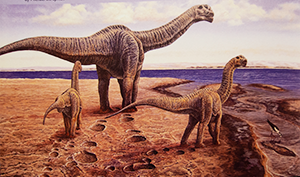
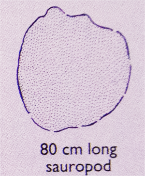

|
|
home | info | tides | map |
|---|
Congratulations you have found a dinosaur track! |
| Sauropoda, or the sauropods, are a clade of saurischian ("lizard-hipped") dinosaurs. They had very long necks, long tails, small heads (relative to the rest of their body), and four thick, pillar-like legs. They are notable for the enormous sizes attained by some species, and the group includes the largest animals to have ever lived on land. Well-known genera include Brachiosaurus, Diplodocus, Apatosaurus, Brontosaurus, and Mamenchisaurus. |
| Text from Wikipedia: Sauropoda |
|   |
| Image from "Dinosaurs of Australia and New Zealand and other animals of the Mesozoic era" by John A. Long |